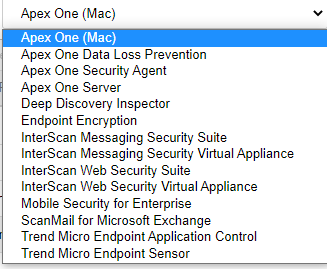

Proteção para usuário:
Trend Micro Endpoint Security
- Trend Micro Apex One
O apex central é usado em conjunto com apex one para configuração. Quando os dois param de ser usado em conjunto?

Proteção para pequenas empresas:
Worry-Free Services